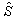

内容 |
モフォロジカルフィルタ
数値行列またはグレースケール/バイナリ画像ににモフォロジカルフィルタを適用します。
これはOriginProのみの機能です。
1. imgMorph op:=open emode:=diamond r:=5;
2. imgMorph op:=erosion emode:=rec col:=5 row:=4;
| 表示 名 |
変数 名 |
I/O と データ型 |
デフォルト 値 |
説明 |
|---|---|---|---|---|
| 入力画像 | im |
入力 MatrixObject |
<active> |
入力画像を指定します。これは、数値行列、グレースケール画像または2値画像である必要があります。デフォルトの入力はアクティブイメージです。 |
| 出力画像 | om |
出力 MatrixObject |
<新規> |
出力画像を指定します。デフォルトで、新しい画像が作成され、出力として使われます。 |
| 操作: | op |
入力 int |
開く |
実行する形態操作を指定します。
|
| 平面要素 | flat |
入力 int |
1 |
平面の構造要素を使うかどうかを指定します。 |
| 行列高さ | hm |
入力 MatrixObject |
<optional> |
この変数は、平面要素が0にセットされている場合のみ、利用できます。構造要素の高さを持つ行列を指定します。 |
| 要素の作成 | emode |
入力 int |
rec |
構造要素を指定します。
|
| 要素の行列 | em |
入力/出力 MatrixObject |
<optional> |
この変数は、「要素の作成」変数が「自由」にセットされているときのみ利用できます。構造化している要素を表す行列オブジェクトを指定するのに使用します。 |
| 列 | col |
入力 int |
3 |
この変数は、「要素の作成」変数が「矩形」にセットされているときのみ利用できます。これは矩形の幅を指定します。 |
| 行 | row |
入力 int |
3 |
この変数は、「要素の作成」変数が「矩形」にセットされているときのみ利用できます。矩形の高さを指定します。 |
| 幅 | w |
入力 int |
3 |
この変数は、「要素の作成」変数が「正方形」にセットされているときのみ利用できます。正方形の幅を指定します。 |
| 半径 | r |
入力 int |
3 |
この変数は、「要素の作成」変数が「ダイアモンド」または「八角形」にセットされているときのみ利用できます。構造オブジェクトの半径を指定します。 |
| 行のオフセット | roffset |
入力 int |
0 |
この変数は、「要素の作成」変数が「周期線」または「ペア」にセットされているときのみ利用できます。2つの隣り合うメンバー間の行オフセットを指定します。 |
| 列のオフセット | coffset |
入力 int |
0 |
この変数は、「要素の作成」変数が「周期線」または「ペア」にセットされているときのみ利用できます。2つの隣り合うメンバー間の列オフセットを指定します。 |
| 長さ | len |
入力 int |
5 |
この変数は、「要素の作成」変数が「線」にセットされているときのみ利用できます。線オブジェクトの長さを指定します。 |
| 角度 (単位:度) | deg |
入力 int |
5 |
この変数は、「要素の作成」変数が「線」にセットされているときのみ利用できます。線オブジェクトの角度を指定します。単位は、度(°)です。 |
| 片側のポイント | np |
入力 int |
5 |
この変数は、「要素の作成」変数が「周期線」にセットされているときのみ利用できます。数字 pを指定します。そして、構造要素に2*p+1ドットの線が現れます。 |
このXファンクションは、モフォロジカル画像処理を行うツールです。数値行列、グレースケール、2値画像に対して使用することができます。
一般的に言えば、モフォロジカル画像処理は、コンボリューションのような操作で画像の構造要素を渡すことで実行します。出力画像は、選択した操作だけでなく、構造要素のサイズと形状によって決まります。
構造要素は、どのような形状でも、どのようなサイズでも行うことができます。これは0および1で構成される行列で、1は隣接セルを定義します。構造要素の異なる形状を使うと、異なる効果になる可能性があります。形状の選択は、ケースバイケースで決めるようにしましょう。目安となる方法としては、関心のあるオブジェクトの幾何的な形状に近い形状を選ぶことです。構造要素のサイズも、出力に影響があります。例えば、エロージョン操作では、より大きなサイズを指定すると、画像内のより大きな要素のみが処理去れ、小さい要素は除かれます。より小さなサイズを指定すると、より小さな要素および画像の細部は残る傾向があります。
4つのモフォロジカル操作がこのツールで利用することができます。それは ダイレーション, エロ－ジョン, 開く ,閉じるです エロージョンは、入力画像のオブジェクトのサイズを小さくし、ダイレーションはオブジェクトの大きさを大きくします。開くは、小さいオブジェクトや細いオブジェクトを除去し、大きいオブジェクトの領域を変更しません。閉じるは、オブジェクトの小さな欠落点を埋め、オブジェクトの境界をスムーズにしますが、オブジェクトの領域は変わりません。必要に応じて、これらの操作から選択します。
この例では、入力画像には異なるサイズの正方形のオブジェクトがいくつか含まれています。 imgMorph Xファンクションを使って、それから小さいオブジェクトを削除します。手順は次のようになります。
入力画像
出力画像
構造要素
入力画像にモフォロジカルフィルタを実行するため、構造要素が画像に渡されます。Bを入力画像にし、Sを構造要素にします。Sxyは、原点が (x,y)にある構造要素と解釈されます。
エロージョンの出力は、次のように表すことができます。
そして、ダイレーションは次のようになります。
ここで、  は、Sの反転で、次のように定義されます。
開く操作は、エロージョンを1度実行し、ダイレーションを1度実行することで、実行されます。そして、閉じるは、ダイレーションを1度実行し、エロージョンを1度実行することで、実行されます。
Kenneth R.Castleman.1996.Digital Image Processing.Prentice Hall, Upper Saddle River, NJ, USA.